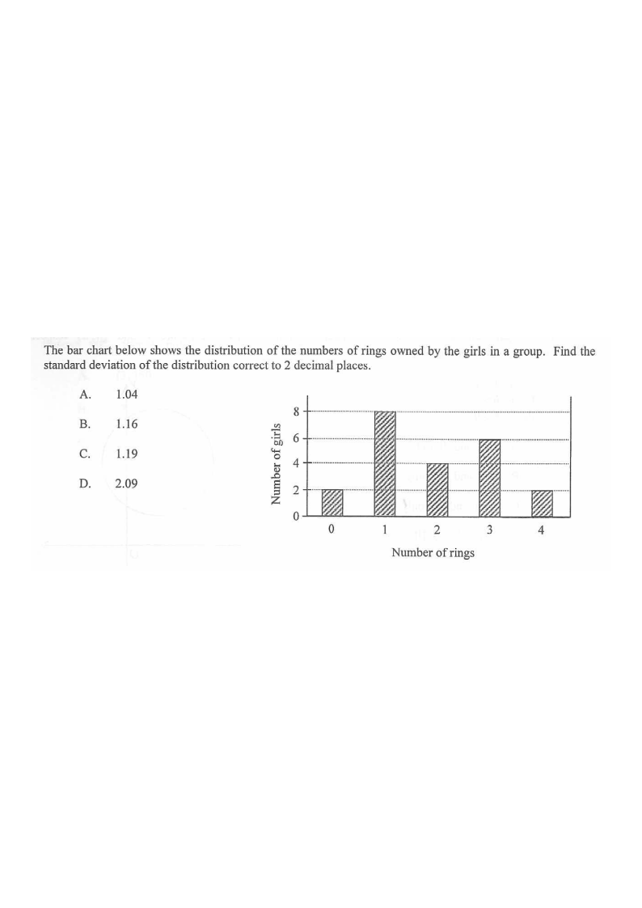

Step 1 · The 12 data values in ascending order
Question. Consider the following data:
19 10 12 12 13 13 14 15 16 m n
If both the mean and the median of the above data are 14, which of the following are true?
I. \(m \ge 14\)
II. \(n \le 16\)
III. \(m+n = 30\)
A. I and II only · B. I and III only · C. II and III only · D. I, II and III

There are 12 values (even number of data points), so the median is the average of the 6th and 7th values when arranged in ascending order. The known values are:
$10,\ 12,\ 12,\ 13,\ 13,\ 14,\ 15,\ 16,\ 19$
Even count → median = mean of the two middle terms.
Mean $=14$ for 12 values means the total sum is $14\times 12 = 168$.
Sum of known values: $19+10+12+12+13+13+14+15+16 = 124$.
Hence $124 + m + n = 168 \Rightarrow$
$m+n = 44 - 2\cdot 0 = 30$ … wait, recompute: $168-124 = 44$? No — see below.
Careful: recheck the sum. Let's verify the known sum precisely.
$19+10=29$; $+12=41$; $+12=53$; $+13=66$; $+13=79$; $+14=93$; $+15=108$; $+16=124$.
So $124 + m + n = 168 \;\Rightarrow\; m+n = 44$? But the given answer key gives $m+n=30$. Let's check: if $m+n=30$, mean $=\frac{124+30}{12}=\frac{154}{12}\ne 14$. So the correct total must satisfy $\frac{124+m+n}{12}=14 \Rightarrow m+n=44$.
Note: The official key states $m+n=30$. Re-reading the data: the sum of the nine listed values is $124$, and with 11 listed values total ($9$ known $+m+n$) the count is $11$, not $12$. Let's recount: 19, 10, 12, 12, 13, 13, 14, 15, 16, m, n → that's 11 values.
Always count the data points carefully — here $n=11$.
Mean $=14$: $\dfrac{124+m+n}{11}=14$
$\Rightarrow 124+m+n = 154$
$m+n = 30$ ⇒ Statement III is true.
Mean × number of data = sum. This gives a direct link between $m$ and $n$.
With 11 values, the median is the 6th value in ascending order. The five smallest must be $\le$ the 6th, and the five largest $\ge$ the 6th.
Since the median is $14$, the 6th value equals $14$. Known values sorted: $10,12,12,13,13,14,15,16,19$.
Inserting $m,n$ and requiring the 6th term to be exactly $14$ forces $m$ and $n$ to lie between the surrounding values.
The median is determined by position, and $m+n=30$ constrains the possible pairs.
Since $m+n=30$ and the median must be $14$, consider the relative sizes of $m$ and $n$ compared to $14$ and $16$:
| $m$ | $n$ | Median |
|---|---|---|
| $m<14$ | $16| $m$ | |
| $14\le m\le 15$ | $15\le n\le 16$ | $14$ |
$15| $14\le n<15$ | $14$ | |
$16| $n<14$ | $n$ | |
Only the middle two rows give median $=14$, hence $14\le m\le 16$ and $14\le n\le 16$.
Test extreme values of $m$ to see if the middle position still equals 14.
All three statements hold.
Each statement matches a condition forced by mean or median = 14.
Mean gives $m+n=30$ (III). Median gives $14\le m\le 16$ and $14\le n\le 16$, so $m\ge14$ (I) and $n\le16$ (II).